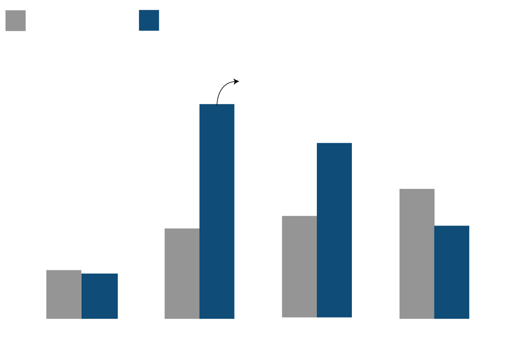
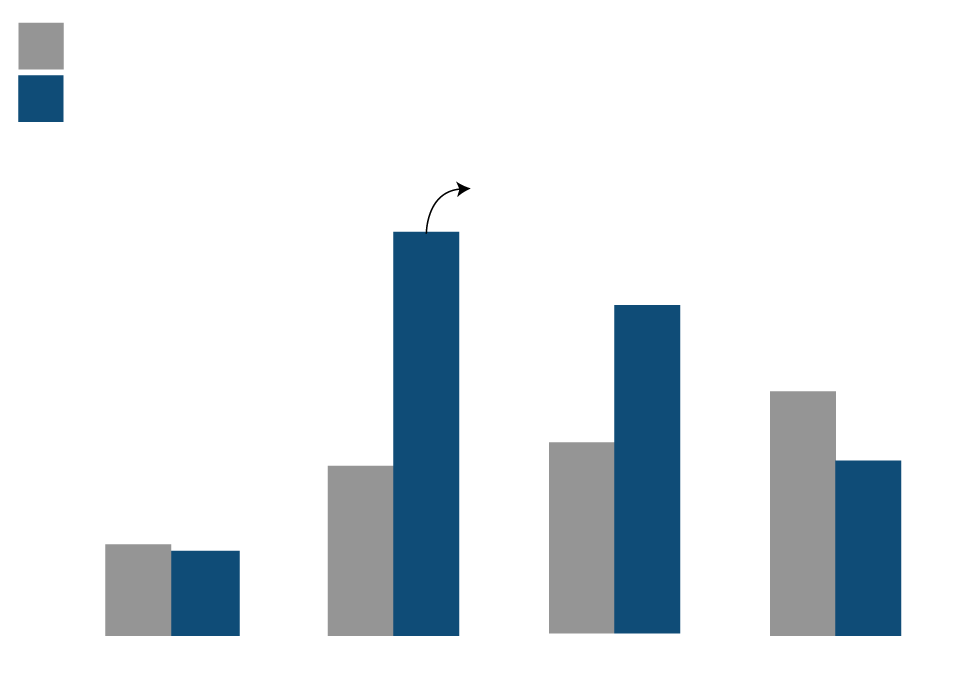
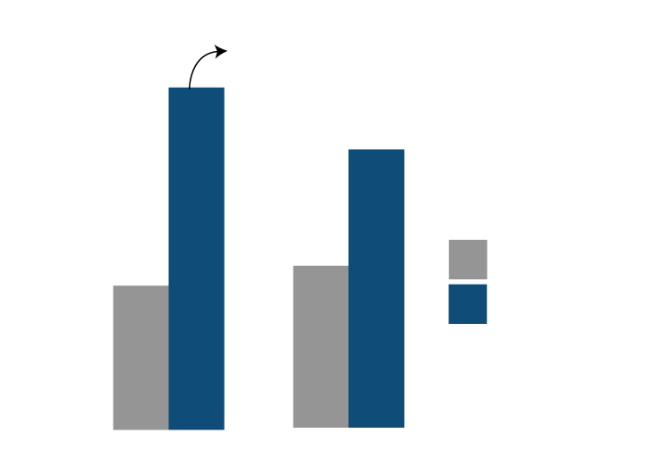
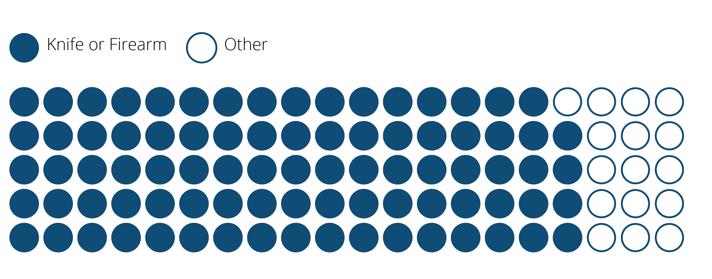

On Jan. 6, 2020, the New York City Police Department released crime statistics showing that overall crime in New York City hit a record low in 2019. There was an increase, though, in the number of murders, rising to 318 last year, up from 295 in 2018. Officials attributed the increase in part to the reclassification of some crimes — but also to an increase in deaths associated with domestic violence.
Since 2017, following the allegations against Harvey Weinstein, the #MeToo movement has given women who have suffered from sexual assault a platform to come forward and accuse perpetrators, all while enforcing the fight against gender-based violence. But in New York City, sexual offense crimes against women in each city borough reached a seven-year high in 2018.
The New York State Division of Criminal Justice Services collects city information on victims of domestic violence provided by the NYPD. Data on domestic violence resulting in sex offense crimes includes offenses of rape, statutory rape, sodomy, incest and sexual abuse. The number of female victims reported by NYPD under this category had a 75 percent increase from 2012-2018, according to the latest data available.
Brooklyn had the highest number of female victims of sex offense crimes in 2018.
Sexual Offense Crimes Against Women
Domestic violence crimes such as rape and sexual abuse where women were listed as victims increased in all boroughs, reaching all-time highs since 2012.
Hover on a circle to see details for each year.
Source: NYS Division of Criminal Justice Services (DCJS).
Other domestic violence cases reported by the DCJS include felony assault, violation of protective order, and assault 3 and related offenses. Taken all together, the number of men listed as victims in domestic violence cases decreased from 5,431 in 2017 to 4,377 in 2018. But the number of female victims not only increased in the same timeframe. It reached a 10-year record high, with over 20,000 women listed as victims of domestic violence crimes.
Women are disproportionately affected by domestic violence crimes compared to men. In 2018, women were attacked almost five times as much as men. In 10 years, females accounted for 82% of all domestic violence attacks.
Domestic Abuse and Gender
Women were listed as the victims close to five times as much as men.
Hover on a circle to see details for each year.
Source: NYS Division of Criminal Justice Services (DCJS).
The Mayor's Office to End Domestic and Gender-Based Violence released a report in 2019 of the 588 domestic violence homicide incidents involving 599 victims from 2010 to 2018. The report, based on homicide data provided by the NYC, said that domestic violence homicides increased by 10 percent from 2017 to 2018. Intimate partner homicides, those who involve individuals who are currently or formerly married, divorced, dating or who have a children in common, increased by 15 percent in the same timeframe.
Over 76 percent of these homicide victims were female, and there were four times as many male perpetrators compared to female counterparts.
The report didn't yet include 2019 data. But at a news briefing on Dec. 5, 2019, Mayor Bill de Blasio and NYPD Commissioner Dermot Shea released statistics showing that of the 300 murders reported up to that point, 59 were domestic violence victims. In 2018, 55 people were murdered in domestic disputes.
Domestic Violence Homicides on the Rise
Homicides in New York City by intimate partners or other family members have increased in the last three years.
Note: Data for 2019 is incomplete and comes from NYPD News Briefing on Dec. 5, 2019.
Source: NYC Domestic Fatality Review Committee Annual Report.
While the latest annual data was incomplete, it was already higher than the year prior. Officials said that domestic violence homicides were in part responsible to the latest murder spike in the city.
Women of color are disproportionately affected by intimate partner homicides, according to the latest report.
Even though black females account for 13 percent of the population in New York City, they accounted for 30.9 percent of intimate partner homicides. Hispanic females account for 14.6 percent of the population in New York City, but accounted for 25.1 percent of murders.
More Violence Against Minorities
From 2010 to 2018, Black and Hispanic females accounted for over 50 percent of murders, even though they make up less than 30 percent of the city population.

Black females accounted for 30.9%
of homicides.

Black females accounted for 30.9%
of homicides.

Black females accounted for 30.9%
of homicides.
Source: NYC Domestic Fatality Review Committee Annual Report.
The majority of intimate partner homicides occured in the Bronx, followed by Brooklyn and Queens. In 2018, there were six more murders in the Bronx compared to 2017.
The use of a weapon or knife is the most common instrument to commit these intimate partner homicides, according to city data. In almost half of these crimes, a knife or a cutting instrument was used. Firearms were used in over 23 percent of cases. The number of homicides involving weapons and knives increased from 17 in 2017 to 24 in 2018.
Firearms and Knives Are the Main Weapon
There was a 40 percent increase in the use of knives or weapons in intimate partner murders from 2017 to 2018. Other methods included blunt trauma, asphyxiation or physical force.

Source: NYC Domestic Fatality Review Committee Annual Report.
Other murders were caused by blunt trauma, strangulation, asphyxiation or other sorts of physical force. "The number of intimate partner homicide-suicides that occurred over the past year reflects the need for more detailed study to illuminate the circumstances leading up to the homicide-suicide, including life stressors or health considerations that may be part of the perpetrators experiences," the report concluded.